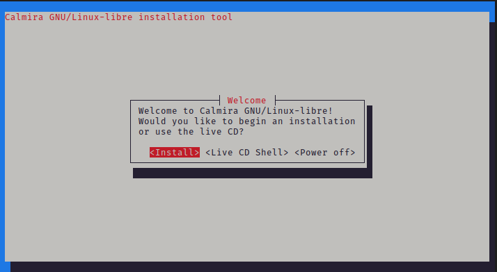

Предисловие
О руководстве
Люди, которые используют Calmira GNU/Linux-libre с недавнего времени, найдут, что в этом руководстве описаны далеко не все сведения о дистрибутиве, так как на данный момент руководство всё ещё находится в разработке. Однако, если вы хотите ускорить работу над Calmira GNU/Linux-libre Handbook, можете либо написать какую-либо из глав, либо исправить уже существующие страницы. Для этого посетите наш GitLab для получения соответствующих сведений. Очень полезным будет раздел "Issues" оттуда - там перечислено всё, что нуждается в исправлении, дополнении и написании.
Данное руководство кратко освещает идеи и традиции, на которых базируется GNU/Linux(-libre). Работа с этим руководством требует нечто большего, чем просто исследовать - важна возможность принимать к сведению и запоминать новые вещи.
Другая часть руководства является инструкцией по установке этого дистрибутива GNU/Linux-libre на свой компьютер или виртуальную машину.
Целевая аудитория
Так как дистрибутив Calmira GNU/Linux-libre (далее - дистрибутив) предназначен для опытных пользователей, либо для тех, кто хочет изучить строение GNU/Linux, то и руководство ориентируется именно на таких людей. Здесь не будет очень обширных сведений о банальных вещах, вроде записи образа на флешку, загрузки ПК с неё и пр. Предполагается, что читатель уже знаком с базовыми сведениями об управлении ПК, поэтому в данном руководстве они отсутствуют.
Если вам не понятны какие-либо сведения, то на это есть две причины:
- Вам не хватает базовых знаний. Тогда добро пожаловать в Google.
- В руководстве эти сведения описаны некорректно. Тогда оставьте у нас на GitLab [ссылка выше] соответствующее issue с полным описанием проблемы.
Условные обозначения, принятые в руководстве
Курсивный шрифт
Используется для выделенного текста и первого применения технических терминов.
Полужирный шрифт
Используется для обозначения приложений, команд и параметров.
Моноширинный шрифт
Используется для обозначения команд, имён пользователей, групп, названий устройств, файлов, переменных и фрагментов кода.
Цитата
Просто какая-то цитата :)
Пользовательский ввод
Клавиши указываются полужирным текстом для выделения среди остального
текста. Комбинации клавиш разделяются символом +:
Ctrl+Alt+Delete
Команды, которые начинаются со знака # означают, что вы должны запустить эту
команду от имени пользователя root в дистрибутиве. Например:
# cport --install editors/gvim
Команды, которые начинаются со знака % означают, что вы должны запустить эту
команду от имени обычного пользователя:
% cport list -a
Символы
#и%вводить не нужно!
Иногда в командах встречаются комментарии. Они также начинаются с символа #.
Для того, чтобы определить комментарий от команды, используйте следующие
правила:
- В руководстве комментарии выделяются серым цветом. А команды - нет.
- Комментарии являются простыми подсказками пользователю и не несут никакой ценности дистрибутиву. Комментарии просто поясняют какие-то вещи, не более.
Часть 1. Введение
Эта часть руководства предназначена для пользователей и администраторов, которые являются новичками в данном дистрибутиве. Сведения отсюда:
- Введут вас в Calmira GNU/Linux-libre.
- Проведут вас по процессу установки дистрибутива.
- Обучат вас некоторым основам Linux.
- Покажут вам как устанавливать стороннее программное обеспечение дистрибутива.
Предназначение руководства
Мы написали это руководство для нескольких категорий пользователей. Во-первых, это те, кто изучает строение GNU/Linux. Таким людям нужен простой и быстрый дистрибутив этой ОС, который распространяется в исходных кодах, а также дистрибутив достаточно легко модифицируемый.
Во-вторых, данное руководство предназначено для разработчиков свободного программного обеспечения для GNU/Linux. Так как наша система достаточно минималистична, достаточно неплохим шагом будет тестирование ПО на ней.
Это общее руководство. Здесь рассматриваются базовые возможности и объясняются, как они работают воедино. В случае выбора между несколькими технологиями предлагается сравнение каждой из них.
Здесь собраны те сведения, которые необходимо знать каждому пользователю для выполнения типичных задач.
Основные обязанности пользователя операционной системы
В приведённых ниже разделах приведены основные задачи, которые должны выполнять пользователи операционных систем. Какие-то задачи достаточно специфичны для какой-либо IT-специальности, но мы их поместили сюда потому, что они не будут лишними и для обычных пользователей, а в некоторых случаях даже будут желательными.
Управление резервными копиями
Резервное копирование данных является достаточно важной задачей для любого пользователя. У каждого из нас есть жёсткий диск или SSD, на котором мы храним как операционную систему, так и свои документы и файлы (слава б-гам, что эра дискет, кассет и картриджей канула в лету). Кто знает, когда эти накопители уйдут в прошлое? Конечно, у нас есть такая вещь, как SMART, но часто ли мы туда заглядываем? А кто знает, когда во время работы выключат свет, и ваш компьютер выключится, в результате чего часть ваших файлов окажется повреждённой?
Резервные копии должны выполняться по определённому расписанию (каждый месяц, неделю, день, час, секунду, etc.), а их восстановление должно периодически проверяться, т.е. необходимо проверять корректность созданных копий.
Установка и обновление программного обеспечения
Дистрибутив Calmira GNU/Linux-libre содержит систему портов и МСП cport для управления программным обеспечением. Эти две вещи в значительной степени упрощают и автоматизируют сборку программного обеспечения из исходного кода, однако работа пользователя не минимализируется до нуля. Он должен управлять зависимостями ПО, проверять и тестировать обновлённое ПО и выполнять прочие действия, о которых пойдёт речь в главах далее.
Исправление проблем
Сбои в работе программного обеспечения и операционной системы происходят достаточно часто, поэтому пользователь должен, по крайней мере, иметь представление о том, как исправить наиболее часто встречающиеся ошибки. Очень кстати будет и обратная связь с разработчиками ПО: пользователь может отправлять им информацию о найденных ошибках или баг-репорты. Достаточно неплохой вещью же со стороны разработчиков является сбор телеметрии1 - обезличенных данных о работе программы, её конфигурации и конфигурации ОС. На самом деле, такие данные очень хорошо помогают понять разработчикам причины ошибки и условия, в которых эта ошибка происходит. Но не следует опускаться до уровня той же Microsoft, которая собирает даже те данные, которые, кажется, и не должна. В эти данные входит история посещений веб-страниц, наиболее используемые приложения и файлы, личные данные, такие, как e-mail адреса, номера телефонов и прочее. Например, правительство Германии не так давно вообще запретило использовать продукцию Microsoft Office в учебных организациях из-за того, что их вредоносный офисный пакет собирал кучу самых разных данных даже из содержимого самих офисных документов!
конечно, мы не выступаем за сбор абсолютно всех сведений, как это делают Microsoft, Apple, Google и прочие подобные корпорации. Тогда это называлось бы слежкой и шпионажем. Во-первых, сбор указанных мною данных должен быть обезличенным и добровольным. Во-вторых, пользователь, если он всё-таки хочет отправлять диагностические данные разработчикам, должен выбирать те сведения, которые следует передавать. Например, мне очень нравится реализация этого в рабочем окружении KDE Plasma: там есть несколько уровней от низшего к высшему, в зависимости от уровня меняется и количество отправляемых диагностических данных. По умолчанию сбор и передача телеметрии там отключена вообще.
Оптимизация операционной системы для выполнения каких-то определённых задач
GNU/Linux, как и многие другие операционные системы, являются ОС общего назначения, а значит, они предназначены по умолчанию для выполнения самых разных задач. Пользователи могут адаптировать ОС для выполнения каких-то конкретных вещей, тогда ОС либо научится их выполнять уже, либо просто будет выполнять их куда лучше.
Введение

Краткий обзор
Прежде всего, добро пожаловать в Calmira GNU/Linux-libre! Этот дистрибутив всегда даёт свободу выбора. При его установке вы не раз убедитесь в этом: пользователи самостоятельно могут выбирать программное обеспечение, которое будет устанавливаться на компьютер, способ установки и прочие подобные вещи.
Этот дистрибутив основан на свободном программном обеспечении и не скрывает от пользователя, как он устроен. cport, система управления ПО дистрибутива, написана на языке Python, что позволяет вам с лёгкостью просматривать и изменять его исходный код. Система сборки CABS написана на Rust и распространяется под лицензией GNU GPLv3. cport и CABS используют исходный код, а настройка дистрибутива производится с помощью текстовых конфигурационных файлов.
Области применения Calmira GNU/Linux-libre
Этот дистрибутив изначально несёт экспериментальную цель - тестирование новейших компонентов либо переход на использование чего-то экзотического. Кроме того, основной областью применения этой системы является изучение особенностей GNU/Linux, его строения и принципа работы. Свободная природа дистрибутива позволяет удалённым группам сотрудничать, обмениваться идеями и совместными разработками, не беспокоясь о наличии специальных лицензий или ограничений. Например, Calmira GNU/Linux-libre разрабатывает небольшая команда из 4 человек, живущих в России, Украине и Норвегии.
Однако никто вам не запрещает использовать эту систему и для других целей. К примеру, в качестве системы для слабого оборудования. Так как дистрибутив не требовательный к ресурсам ПК, его можно запустить на достаточно слабом железе. Главное, чтобы процессор был архитектуры x86_64 - поддержки 32-битных ЦП в Calmira GNU/Linux-libre никогда не было.
Варианты установки
Дистрибутив можно установить разными способами. Вы можете загрузить установочный iso-образ системы. Тогда установщик оттуда скопирует вам уже собранную систему на компьютер. Либо вы можете пойти более сложным путём - самостоятельно скомпилировать Calmira GNU/Linux-libre из исходного кода посредством системы сборки CABS.
Установка дистрибутива версии >= 2.Х
Дистрибутив версии 2.0 и выше поставляется с простой в использовании псевдографической программой установки. В релизах, предшествующих 2.0, такой программы нет, и вся установка производилась вручную. Кроме того, в этих релизах не формировались загрузочные iso-образы, а генерировались squashfs-снимки. Как вы уже поняли, процесс установки старых версий Calmira GNU/Linux-libre достаточно сложен, поэтому мы специально закончили их техподдержку после выхода версии 2.0, процесс установки которой сильно упрощён.
Прочтя эту страницу документации, вы узнаете:
- Как дистрибутив видит и делит на разделы жёсткие диски.
- Как запустить
calminstall. - Как работать с
calminstall.
Системные требования
| Пункт | Минимальные требования | Рекомендуемые требования |
|---|---|---|
| ЦП | x86_64 > 900 МГц | x86_64 1 ГГц |
| ОЗУ | 64 Мб | 128 Мб |
| Жёсткий диск | HDD 1.5 Гб | SSD 5 Гб |
| Сеть | -- | Наличие сетевого адаптера1 |
в дистрибутиве используется ядро Linux-libre, которое было очищено от несвободных драйверов, прошивок и блобов. Это значит, что некоторое оборудование (как правило, это сетевые, звуковые и видеокарты) в ОС не поддерживаются, т.е. либо не будут определяться в системе вообще, либо просто не будут корректно работать. В том случае, если что-то из вашего оборудования не поддерживается, попробуйте переключиться на обычное ядро Linux с проприетарными несвободными компонентами [оно входит в минимальную поставку дистрибутива; переключиться можно, выбрав в меню загрузчика ОС соответствующий пункт]. Если не помогло и это, то отправьте нам issue об этом на нашем GitLab. Опишите поведение дистрибутива, версии программного обеспечения (ядро Linux-libre и Linux),тип оборудования, с которым возникли проблемы, его модель и прочие подобные сведения.
Разделы диска для дистрибутива
Диск ПК делится на отдельные части, которые называются разделами. Каждая
операционная система определяет разделы своим способом. К примеру, MS-DOS и её
потомки, такие, как Windows, присваивает каждому главному и логическому разделу
букву диска, например, A:, B:, C:, D: и т.д. А, например,
операционные системы семейства GNU/Linux, именуют диски и разделы так:
/dev/XdYN, где X и Y - определённая буква диска, а N - номер раздела на
этом диске. X определяет тип диска (h - диск IDE, s - диск SATA), y -
сам диск (a - главный диск, b, c, d... - съёмные диски).
К примеру, sda3 - это третий раздел (3) главного жёсткого диска (a) типа
SATA (s). Таблица ниже поможет определить тип диска
| Тип устройства | Дескриптор устройства | Примечания |
|---|---|---|
| SATA, SCSI, USB Flash | sda, sdb, sdc... | Стал доступен где-то в 2007 году и встречается до сих пор. Наверно, на данный момент самый используемый в GNU/Linux тип. |
| NVMe | nvme0n1 | Передовая технология накопителей. Устройства NVMe подключаются к шине PCI Express и обладают наиболее высокой скоростью передачи данных. Первый раздел на первом NVMe накопителе обозначается как nvme0n1p1. Поддержка таких устройств в ядре Calmira GNU/Linux-libre есть, но не протестирована. Если у вас есть возможность протестировать систему на таком накопителе, оставьте issue на GitLab CalmiraLinux. |
| MMC, eMMC, SD | mmcblk0 | SD-карты, MMC и embedded MMC устройства. Используются для хранения данных. ВНИМАНИЕ: не все устройства могут иметь возможность загрузки с этих накопителей. ВНИМАНИЕ: цикл чтения/записи у таких устройств ограничен куда более, чем у накопителей выше. Поэтому настоятельно не рекомендуется использовать их для установки туда какой-либо операционной системы. Лучше используйте их для переноса файлов, хранения мультимедиа-контента или для кратковременного резервного копирования данных. |
Принцип "всё есть файл"
Операционная система UNIX воспринимает многие вещи как файлы. Даже устройства. Файлы устройств содержатся в директории
/dev. Поэтому если в данном руководстве указывается что-то вроде разделsdc4(или что-то вроде этого), то знайте, что здесь подразумевается раздел/dev/sdc4.
Начало установки
Вставьте загрузочный носитель в ПК и загрузитесь с него. Вас будет приветствовать меню загрузки:
Вам нужно выбрать пункт "Build Calmira GNU/Linux-libre". Для этого выберите данный пункт стрелками клавиш и нажмите Enter. Во время загрузки на экран будут выведены сообщения о процессе старта системы. Как правило, пользователю они нужны будут только в том случае, если во время загрузки системы произошла какая-либо ошибка. К примеру, система не загрузится, если вы загружаете её iso-образ с помощью программы Ventoy.
После окончания загрузки система запросит ваш логин и пароль:

Введите следующие данные:
- Логин:
root - Пароль:
root
После логина вас будет приветствовать диалоговое окно:

Вам будет предложено 3 пункта:
- Install - запускает установщик системы;
- Live CD Shell - это диалоговое окно закрывается и вы переходите в оболочку BASH загруженной ОС;
- Power off - выключение/перезагрузка компьютера.
Для запуска установщика выберите пункт 1.
В том случае, если вы выбрали второй пункт, вы окажетесь в оболочке системы. Если вы захотите позже запустить установщик, введите команду
calminstall.
Сбор начальных сведений
Выбор раскладки клавиатуры
Для начала установщик запросит у вас раскладку клавиатуры, которая будет использоваться в дистрибутиве после установки. Заметьте, что по умолчанию у вас будет всегда английская раскладка, а та, которую вы выбираете, будет второй.
Используя клавиши навигации найдите нужную вам раскладку и нажмите Enter для её выбора.
Установка имени хоста
Далее установщик запросит имя хоста для устанавливаемой системы.
Выбор устанавливаемых компонентов
Выберите дополнительные компоненты, которые вы хотите установить в систему.
Заметьте, что менеджер системы портов cport, как и сама система портов, не
входят в состав базовой системы и являются опциональными. Если вы не выберите
пункт ports.txz, то вы не сможете управлять программным обеспечением в Calmira
централизованным и простым путём. Однако, вы можете самостоятельно находить
архивы с программным обеспечением (как исходный код, так и уже собранное ПО).
Однако это достаточно сложный и небезопасный способ. Система портов - это
простой и удобный способ управления программами. Она не содержит исходного кода
ПО. Система портов состоит из множества файлов с информацией о ПО, а также
со сборочными инструкциями для автоматизации загрузки, компиляции и установки
программ.
Если вы устанавливаете редакцию Extended (расширенную), то обязательно выберите
пункт extended.txz, иначе ничего из расширенной редакции установлено не будет.
В зависимости от содержимого установочного iso-образа, а также от редакции дистрибутива, содержимое меню будет различаться. Все пункты приведены в списке ниже:
development.txz- программное обеспечение для разработчиков;doc.txz- документация Calmira GNU/Linux-libre;ports.txz- система портов иcport;src.txz- исходный код системы;linux.txz- обычное ядро Linux (по умолчанию устанавливается Linux-libre);extended.txz- расширенная редакция дистрибутива. Включает в себя сервер Xorg и рабочее окружение Anomura;
Внимание!
Учтите, что программа установки не проверяет наличие свободного места на диске. Поэтому, когда вы выбираете тот или иной пункт, будьте уверены, что вам хватит для него места. К примеру, исходный код системы может занимать от 1 до 3 Гб дискового пространства, а пересборка всей системы может затребовать от 5 до 20 Гб.

Работа с дисками
Есть два способа осуществить разбиение дискового пространства для установки дистрибутива. Автоматическое разбиение самостоятельно настроит разделы диска, ручное разбиение даст возможность пользователю разметить жёсткий диск согласно своим требованиям. Требуется учесть, что автоматическое разбиение уничтожит все существующие разделы, создав на их месте необходимые для дистрибутива. Если на жёстком диске уже установлена какая-то операционная система, то она будет уничтожена.
В случае использования ручного разбиения запускается программа /sbin/cfdisk,
которая позволяет пользователю самостоятельно создавать, удалять и изменять
разделы на жёстком диске. В таком случае после разметки диска установщик
запросит у вас некоторые данные вроде корневого раздела (/), раздела /home,
раздела подкачки и пр.
После выбора ручной разметки вы увидите следующее окно:

Внимание!
На данный момент функция автоматического разбиения диска нестабильна, поэтому по умолчанию отключена. Дождитесь следующих версий Calmira GNU/Linux-libre для использования этой опции.
Завершение сбора сведений и разметки дисков
Следующий шаг - ваш последний шанс прервать установку. Далее последует
монтирование созданных разделов, создание необходимых файлов и каталогов и,
наконец, распаковка архивов с системой. Как только все выбранные архивы
распакуются, calminstall начнёт исполнять скрипты для настройки установленной
системы.
Установка пароля root
Установка root-пароля обязательна. Заметьте, что во время ввода пароля для
всех пользователей набираемые символы не отображаются на экране. После ввода
пароля он будет запрошен ещё раз для предотвращения опечаток при наборе.
Создание пользователя
Далее установщик запросит у вас имя обычного пользователя. После ввода имени создайте пароль нового пользователя. Всё также, как и в предыдущем пункте: символы пароля не отображаются на экране, ввод пароля повторится ещё один раз для исключения возможности опечататься при вводе.
Часть 2
Данная часть содержит сведения о настройке дистрибутива Calmira GNU/Linux-libre после установки. Информация здесь предназначена для быстрого входа в систему. В части 3 приведены более конкретные и объёмные сведения о строении и принципе работы GNU/Linux.
Авторизация в системе
После того, как только что установленная Calmira GNU/Linux-libre запустилась, вас будет приветствовать примерно такое системное приглашение:
Welcome to Calmira GNU/Linux-libre 6.0.0-gnu!
Date: Mon Dec 26 2022 23:23:40
Kernel: 6.0.0-gnu
Host: test-pc
test-pc login:
Если во время установки вы указали имя хоста, то вместо test-pc у вас будет
отображаться это имя. 6.0.0-gnu - это версия ядра Linux, которое используется
конкретно в вашей версии Calmira GNU/Linux-libre. В зависимости от версии
системы будет изменяться и версия ядра.
Строка test-pc login: указывает вам, что необходимо ввести имя пользователя.
На данный момент мы не создавали никаких пользователей, но у нас есть
пользователь root - что-то вроде пользователя "Администратор" в MS-Windows.
Введите имя пользователя: root.
test-pc login: root
После чего система запросит у вас его пароль. Пароль по-умолчанию: root. При
вводе пароля на экране не будут показываться его символы - это сделано ради
безопасности!
test-pc login: root
Password:
В том случае, если вы правильно ввели логин и пароль, у вас загрузится оболочка
/bin/bash:
Welcome to Calmira GNU/Linux-libre 6.0.0-gnu!
Date: Mon Dec 26 2022 23:23:40
Kernel: 6.0.0-gnu
Host: test-pc
test-pc login:
Password:
Last login: Sun Sep 25 20:54:53 +0300 2022 on /dev/tty1
No mail.
root:~#
Строка Last login ... показывает информацию о том, когда был предыдущий вход в
систему:
- Дата входа
- В каком TTY был произведён вход1
разговор о TTY будет в главах далее. А пока просто считайте, что это консоль.
root:~# - это приглашение к вводу команды. Наличие этой строки означает то,
что система загрузилась и готова к выполнению ваших команд.
Первичная настройка дистрибутива
После того, как система полностью загрузилась, вам необходимо выполнить некоторые действия по её первичной настройки.
Создание пользователей
Первым делом вам нужно создать обычного пользователя, из-под которого вы будете
работать по умолчанию. Для создания пользователей используется программа
useradd. Введите команду:
# useradd -m USERNAME -s /bin/bash
В том случае, если программа useradd завершилась без ошибок (а значит, нужный
пользователь создан), в терминал не будет ничего выведено. Если useradd вывела
в терминал какое-либо сообщение, то проанализируйте его и выполните те действия,
которые там, возможно, указаны.
После чего вам нужно дать ему пароль:
# passwd USERNAME
Программа выведет в терминал:
Изменение пароля для USERNAME
Введите новый пароль (минимальная длина 5 символов)
Используйте комбинацию из символов в верхнем и нижнем регистре и цифры
Новый пароль:
Повторите новый пароль:
passwd: пароль изменён.
В том случае, если по умолчанию у вас не русский язык, а английский, то вывод будет таким:
Changing password for USERNAME
Enter the new password (minimum of 5 characters)
Please use a combination of upper and lower case letters and numbers.
New password:
Re-enter new password:
passwd: password changed.
USERNAME замените на имя пользователя. Например,
michail. Имя пользователя должно быть на английском и
содержать только буквы и, возможно, цифры. Все остальные символы использовать не
рекомендуется во избежание ошибок в работе системы и стороннего программного
обеспечения.
Объяснение команд
useradd- программа для создания новых пользователей.-mв командеuseradd ...- указывает программеuseraddсоздавать домашнюю директорию пользователя в/home/.-s /bin/bash- закрепляет за создаваемым пользователем оболочку/bin/bash. Она будет использоваться для него по умолчанию. Других командных оболочек в Calmira GNU/Linux по умолчанию нет.USERNAME- вместо этих символов подставьте имя пользователя.passwd- устанавливает новый/изменяет пароль пользователя.
Для того, чтобы войти в систему от имени созданного пользователя, можно использовать два способа:
Способ 1:
# su USERNAME
Способ 2:
# exit
После выполнения данной команды вас будет приветствовать приглашение к входу в систему как на предыдущей странице. Введите имя созданного пользователя и его пароль.
Почему не рекомендуется работать от имени пользователя root?
root- это системный привилегированный пользователь. Если вы работаете от его имени, то у вас есть широкие возможности для модификации и изменении операционной системы GNU/Linux-libre. Вы можете случайно удалить какой-либо системный файл, в результате чего работа системы будет либо некорректной, либо вообще невозможной. Кроме того, ваша система становится уязвимой для не самых хороших личностей, которые могут либо поломать её, либо украсть какие-либо данные, либо даже отправить в систему вирус или троян.Вопреки известному мнению о том, что "в GNU/Linux(-libre) нет вирусов" - это совсем не так. Вирусы, трояны и прочая гадость эксплуатирует уязвимости в программном обеспечении, в том числе и в ОС. А в любом ПО так или иначе есть баги, ошибки и уязвимости. Однако можно отметить тот факт, что для UNIX-подобных систем существует несколько меньше вирусов, чем для той же MS-Windows. Да и на компьютерах обычных пользователей вирусы - это редкое явление. Однако не следует пренебрегать своей безопасностью.
Используйте учётную запись
rootисключительно в крайних случаях. В том случае, если вам нужно выполнить команду/программу с повышенными привилегиями, то используйте либо программуsu -c "команда", либо программуsudo(портgeneral/sudo. Информация об этой программе будет в главе 3. Установить её легко:# cport -i general/sudo
Настройка GRUB
Первичный конфиг GRUB находится в файле /boot/grub/grub.cfg:
# Begin /boot/grub/grub.cfg
set default=0
set timeout=3
insmod ext2
set root=(hd0,2)
menuentry "Calmira v2.0 Core Edition" {
linux /boot/vmlinuz-6.0-gnu root=/dev/sda2 ro quiet
}
Параметр default определяет выбранный по умолчанию пункт меню GRUB.
Параметр timeout определяет время (в секундах), по прошествии которого, в
случае бездействия пользователя, будет выбран стандартный пункт меню, указанный
в параметре default.
TODO: больше конкретики
Редактирование файлов
Неотъемлимой частью работы с любой операционной системой или дистрибутивом операционной системы является редактирование простых текстовых файлов. Это могут быть конфигурационные файлы [а в Calmira GNU/Linux-libre их вы будете редактировать достаточно часто], код или что-то в этом роде. Следовательно, в системе должен присутствовать удобный и функциональный текстовый редактор, предназначенный для выполнения разных задач.
В релизах Calmira GNU/Linux 2021.x и 1.x по умолчанию был установлен текстовый редактор Vim, однако в Calmira GNU/Linux-libre 2.0 и далее Vim был заменён на NeoVim.
Здесь приводятся только самые базовые сведения об этом текстовом редакторе. Для получения развёрнутой информации прочтите документацию этого текстового редактора. Её вы можете найти на официальном сайте neovim.
Для того, чтобы открыть в редакторе файл, введите:
% nvim FILENAME
FILENAME замените на имя файла, который нужно
создать/отредактировать.
Сейчас вы находитесь в командном режиме. Для того, чтобы начать редактировать
файл, нажмите клавишу i. После того, как работа над редактированием файла
завершилась, нажмите Esc для перехода в обычный режим. Для сохранения
файла введите:
:w
Для выхода из редактора:
:q
Эквивалентная команда:
:wqСохранит файл и выйдет из редактора
Управление программным обеспечением
TODO
- Зависимости
- Установка по
- Удаление по
- Обновление по
- Обновление системы портов
- Просмотр информации о ПО
- Список портов
Всё программное обеспечение в Calmira GNU/Linux-libre собирается из исходного кода. Для многих людей это достаточно сложный и утомительный процесс, поэтому в системе присутствует средство для автоматизации этого процесса: система портов и программа, которая с ней взаимодействует.
Эта вещь называется "системой портов" потому, что она может функционировать на различных архитектурах процессора.
Система портов
Система портов представляет собой набор файлов в /usr/ports. В этой директории
существует ряд поддиректорий, которые являются категориями ПО, сортирующее это
ПО по предназначению. К примеру, поддиректория base/ содержит в себе все
системные порты, поддиректория editors/ содержит в себе порты текстовых
редакторов.
В категориях расположены ещё одни поддиректории - это либо каталоги с самими
портами (имя каталога = имя порта), либо подкатегории. Например, подкатегория
base/efi содержит в себе порты для обеспечения корректной загрузки системы на
UEFI.
Как различать каталог с портом от каталога с подкатегорией портов? Очень
просто. В подкатегориях содержатся ещё одни каталоги, в которых расположены
порты, принадлежащие данной подкатегориию. В директории порта же находятся
текстовые файлы, основные из них: install, port.toml и files.list. Об их
предназначении далее.
Строение порта
Нахождение порта в файловой системе
Порт - это директория в одной из (под)категорий в /usr/ports. Когда мы
называем имя порта, мы указываем его по следующему примеру: категория/имя.
Т.е. указываем путь до директории порта, опуская /usr/ports. Например, порт,
находящийся по адресу /usr/ports/base/acl в руководстве и прочей документации
будет указываться как base/acl. Тоже самое нужно указывать и при работе с
менеджером системы портов cport, речь о котором будет в следующей части этой
страницы.
Файлы в каталоге порта
Порт - это набор определённых файлов, содержащих сведения о портируемом ПО, инструкции по сборке этого ПО из исходного кода и список файлов, которые этот порт устанавливает в систему:
port.toml- информация о портируемом ПО. Содержит сведения об имени пакета, его версии, краткое описание, информация о сборщике данного порта, список зависимостей и прочие подобные сведения.install- исполняемый BASH-скрипт, содержащий инструкции по сборке ПО из исходного кода.files.list- список файлов, которые будут установлены в систему этим портом.
Кроме того, есть ряд необязательных файлов:
README.md- Markdown-файл, содержащий сведения из файлаport.toml. Предназначен для формирования этой документации.files/- директория, содержащая дополнительные файлы порта, такие, как сторонние рекомендуемые конфигурационные файлы или патчи.description- файл с расширенным описанием порта (т.к. описание вport.tomlограничено 1й строкой, файлdescriptionможет содержать произвольный объём информации).
Обратите внимание!
Глава 2 является вводной, поэтому здесь не будет расширенных сведений о системе портов и управлении программным обеспечением. Для получения дополнительных сведений см. главу 3.
Менеджер системы портов cport
cport предназначен для управления системой портов. Без него СП - просто набор ненужных никому файлов. cport же выполняет основные действия по работе с СП: чтение конфигурационного файла порта, скачивание и распаковка архивов с исходным кодом, исполнение сборочных инструкций порта и ведение локальной базы данных установленного в систему ПО.
Без cport пользователю самостоятельно приходилось бы собирать и хранить сведения об установленном в систему программном обеспечении, самостоятельно скачивать и распаковывать архив с исходниками ПО, а также запускать сборочные инструкции ПО. Данный метод не является безопасным, а cport выполняет множество проверок портов и дистрибутива перед исполнением каких-либо действий.
Иначе говоря, cport автоматизирует рутинные действия пользователей и администраторов, к тому же, избавляя их от выполнения проверок и тестов на совместимость с дистрибутивом Calmira GNU/Linux-libre, например.
Возможности cport
- Установка ПО
- Удаление ПО
- Сбор, хранение и просмотр информации о ПО
- Ведение локальной базы данных установленного в систему ПО
- Обслуживание системы портов (проверка на ошибки, поддержание её в актуальном состоянии)
- Обновление ПО до новой версии
- etc.
Установка программного обеспечения
Для того, чтобы установить какой-либо порт, используется ключ -i (полная
версия: --install):
# cport -i PORT_NAME
Вместо PORT_NAME подставьте имя нужного порта,
например, base/acl. Кроме того, вы можете указать
несколько портов. Они будут собраны в указанной вами последовательности.
Обратите внимание!
cport не обрабатывает зависимости! Поэтому, если у программы есть зависимости, их вам нужно установить первыми, а уже потом собрать исходный порт.
Удаление программного обеспечения
Для удаления используется ключ -r (--remove):
# cport -r PORT_NAME
МСП пройдётся по файлу files.list порта. Каждый файл, который указанный порт
устанавливает в систему, указывается на новой строке files.list. На основе
содержимого этого файла cport составляет список файлов. После чего проходится по
этому списку и удаляет из него те файлы, которые в системе отсутствуют. По
завершению этого процесса все существующие в системе файлы удаляются.
Просмотр информации о ПО
Для того, чтобы просмотреть информацию о порте(ах) используется ключ -I
(--info):
# cport -I PORT_NAME
Будет прочитано содержимое файла port.toml указанного порта, после чего
результат парсинга будет выведен на экран:
====================== Information about port 'base/attr' ======================
Base information:
name : attr
version : 2.5.1
description : Commands for Manipulating Filesystem Extended Attributes.
maintainer : Sergey Gaberer <nordic.dev@pm.me>
releases : v2.0a1 v2.0a2 v2.0a3
priority : system
usage : 4.4
upgrade_mode: soft
build_time : 0.1
installed : True
Dependencies:
required : base/libtool
В терминал будет выведена основная информация, взятая из файла port.toml:
- name - имя программы (а не порта - имя порта и так уже известно)
- version - версия порта/программы
- description - краткое описание порта
- maintainer - информация о создателе и/или сопровождающем порта
- releases - список релизов Calmira GNU/Linux-libre, с которыми совместим данный порт
- priority - приоритет порта (
system- системный,user- пользовательский; системные порты нельзя удалять из системы во избежание ошибок в её работе) - usage - сколько занимает место порт в файловой системе после установки (в мегабайтах)
- upgrade_mode - режим обновления (
soft- порт просто переустанавливается,hard- все файлы порта удаляются, после чего устанавливается новая версия порта) - build_time - примерное время сборки порта (в единицах, аналогичных SBU из руководства "Linux From Scratch")
- installed - установлен ли порт в систему (
True- порт установлен,False- порт не установлен)
Далее идёт секция с описанием зависимостей порта:
- required - необходимые зависимости
- recommend - рекомендуемые зависимости
- optional - опциональные зависимости
Обратите внимание!
Какого-то из пункта с описанием типов зависимостей в выводе может и не быть (ровным счётом как и у ПО может не быть определённого типа зависимостей). Иногда возникают такие ситуации, когда секция
Dependenciesвообще пуста - ничего страшного или необычного в этом нет.